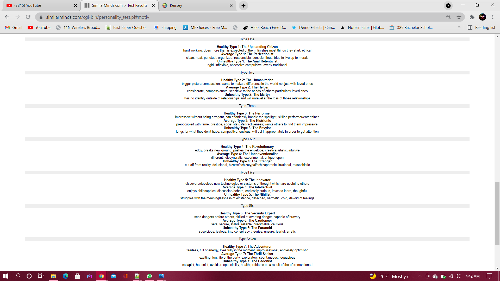
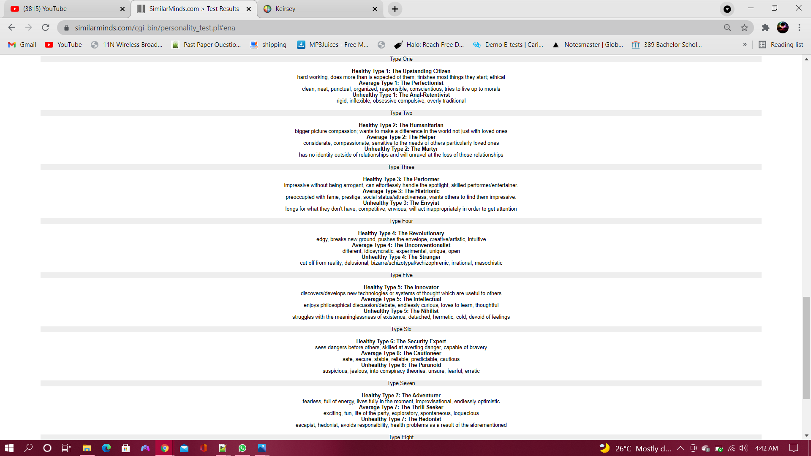

Comments on the image above
I didnt initially go into this review with anything in mind really, and the results i got were more or less fair? i dont really know its ohkay in my view. It does say however that im 100% easy going which after writing this paragraph i can see why that is so :) and another thing that was accurate was the fact i am intact emotionally more than the next guy.
MOTIV info
JUNG info
Personality Desorder info
Enneagram info
